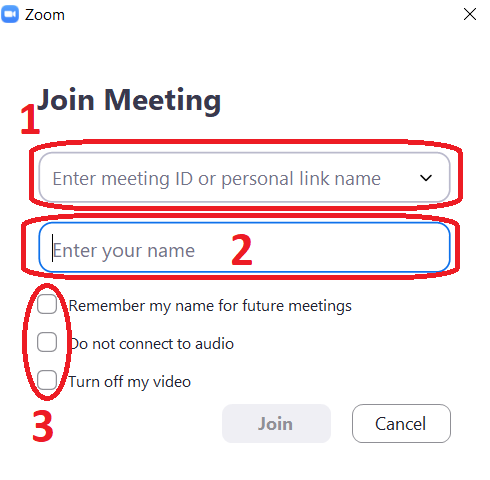
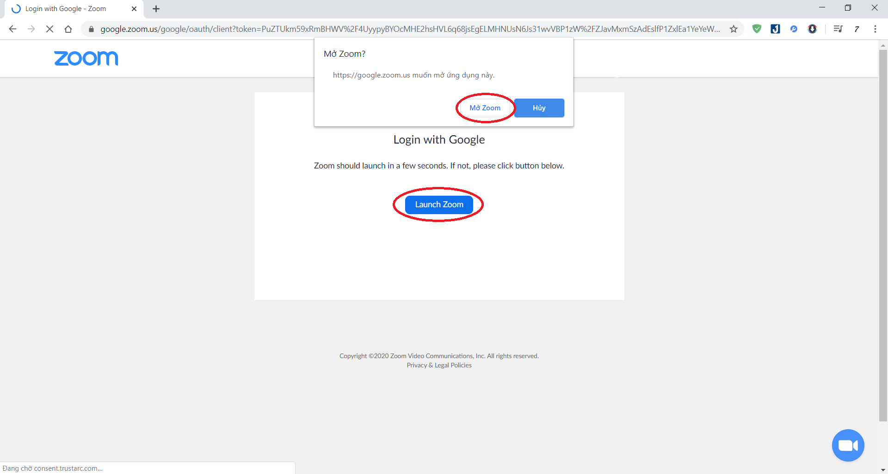
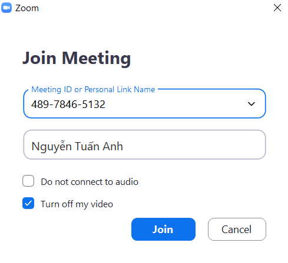

Hình 1: Giao diện ứng dụng Zoom
Ở đây chúng ta có 2 lựa chọn:
Join a Meeting: Tham gia lớp học mà không cần đăng nhập.
Sign In: Bắt buộc phải đăng nhập thì mới tham gia được lớp học.
Chúng ta có thể làm theo 1 trong 2 cách trên,để đơn giản chúng tôi khuyến khích phụ huynh và học sinh sử dụng cách 1.
Cách 1: Join a Meeting (Đơn giản,khuyến khích sử dụng)
Sau khi chọn Join a Meeting chúng ta sẽ thấy giao diện như sau
Hình 2: Giao diện Join a Meeting
Trong đó:
1: ID hoặc Link do giáo viên cung cấp (Bắt buộc).
2: Họ tên học sinh tham gia lớp học (Bắt buộc).
3: Tích vào các ô trống như trong Hình 3 (Bắt buộc).
Bước 1: Điền ID,tên học sinh và tích vào các ô trống như hình trên,sau đó bấm Join.
Hình 3: Click Join
Bước 2: Sau khi click "Join" sẽ xuất hiện giao diện như sau,phụ huynh/học sinh điền mật khẩu được giáo viên cung cấp sau đó ấn Join Meeting.
Hình 4: Điền mật khẩu sau đó bấm Join Meeting
Sau khi bấm Join Meeting hệ thống sẽ xuất hiện giao diện như sau.Đây là giao diện học sinh đang đợi giáo viên cho phép vào lớp.

Hình 5: Học sinh đợi giáo viên cho phép vào lớp
Sau khi được giáo viên chấp nhận tham gia lớp học,hệ thống sẽ tự động kết nối đưa học sinh tham gia lớp học.Thời gian nhanh hay chậm phụ thuộc vào tốc độ mạng của học sinh.
Hình 6: Kết nối với lớp học
Bước 3: Sau đó giao diện xuất hiện như Hình 7.Phụ huynh/học sinh bấm vào Join with Computer Audio để tiến hành bật âm thanh nghe được giáo viên giảng.
Hình 7: Bật âm thanh
Học sinh đã tham gia lớp học thành công.
Hình 8: Giao diện lớp học
Bước 4: Kiểm tra mic và camera.Phụ huynh/học sinh cần đảm bảo mic và camera đã được tắt như hình.
Hình 9: Đảm bảo mic và camera đã tắt
Như vậy học sinh đã tham gia lớp học bằng cách 1 thành công !
Cách 2: Sign In (Phức tạp hơn cách 1)
Sau khi chọn Sign In chúng ta sẽ thấy giao diện như sau:
Hình 10: Giao diện Sign In
Ở đây chúng ta có rất nhiều cách để đăng nhập,trong bài viết này chúng tôi sẽ hướng dẫn phụ huynh/học sinh đăng nhập bằng tài khoản Google.
Bước 1: Click vào ô Sign In with Google.
Hình 10: Click Sign In with Google
Sau đó hệ thống sẽ tự động mở trang đăng nhập tài khoản Google.Phụ huynh/học sinh đăng nhập tài khoản google theo yêu cầu.
Hình 11: Đăng nhập tài khoản Google
Bước 2: Sau khi đăng nhập thành công tài khoản Google tiếp tục ấn vào Mở Zoom hoặc Launch Zoom như hình.
Hình 12: Mở zoom
Hệ thống sẽ mất một thời gian để kết nối.Nhanh hay chậm phụ thuộc vào tốc độ mạng của phụ huynh/học sinh.
Hình 13: Connecting...
Bước 3: Sau khi đăng nhập thành công,giao diện sẽ như Hình 14.Phụ huynh/học sinh chọn Join để tham gia lớp học.
Hình 14: Chọn Join để vào lớp
Bước 4: Phụ huynh/học sinh điền ID giáo viên cung cấp và họ tên học sinh sau đó chọn Join để tham gia lớp học.
Chú ý: Tích chọn vào Turn off my video như Hình 15.
Hình 15: Điền thông tin sau đó chọn Join
Bước 5: Lặp lại từ Bước 2 của Cách 1.